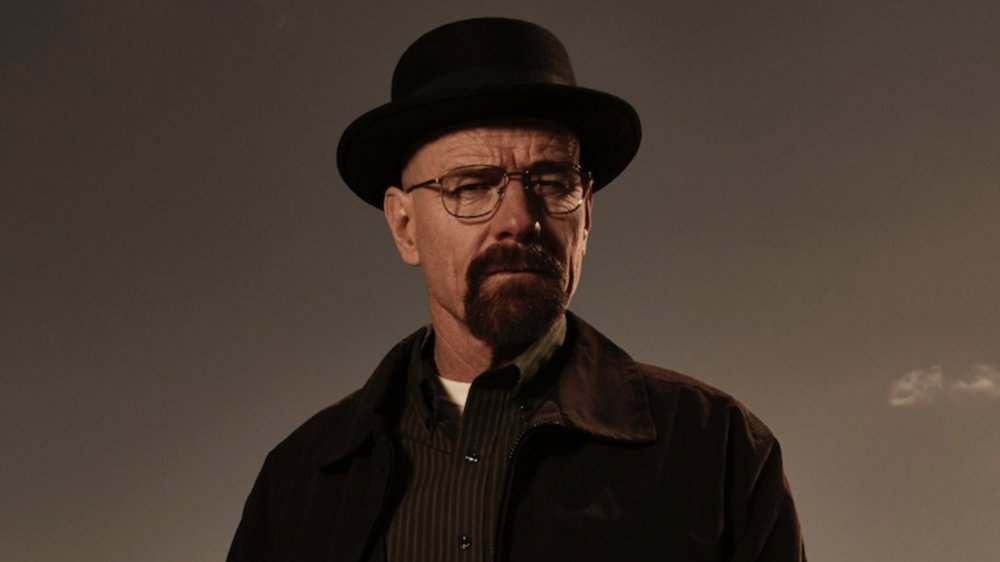

Walter White on business meeting
Here's time line of Walter White's life:
- 1958 - Walter White is born to Mr. White Sr. and Mrs. White.
- 1985 - Nobel Prize in Chemistry is awarded to Herbert A. Hauptman and Jerome Karle for "for their outstanding achievements in developing direct methods for the determination of crystal structures." Walter White worked on the team and helped conducted research on proton radiography
- 1980s - Gray Matter Technologies founded by Walter White, Elliot Schwartz, and Gretchen Schwartz
- 1980s - Walter White and Gretchen analyze the components of the human body.
- 1992 - Walter is employed at Sandia National Laborator
- 1993 - Walter White Jr. is born to Walt and Skyler.
- 2004 - Walter takes on side work at the A1A Car Wash.
- 2008
- Walter celebrates his 50th birthday and finds out he has Lung Cancer.
- Walter and Jesse team up to cook meth. They operate in the desert aboard an RV that serves as a mobile laboratory
- The two are attacked by Krazy-8 and Emilio. Walter poisons them with phosphine gas, leading to Emilio's death.
- Walter kills Krazy-8 by strangling.
- Elliott and Gretchen offer to pay for Walter's cancer treatment, but Walter refuses.
- Walter starts treatment of his lung cancer.
- Walter blows up Tuco's headquarters after Tuco beat Jesse.
- Tuco becomes the distributor of methamphetamine produced by Walter and Jesse.
- 2010 - Walter White dies at age 52